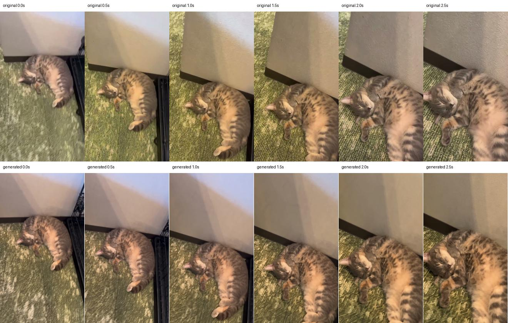

MEOW&ME / MOTION TEST 01
同じ猫の動きを再現できるか
左：いただいた実写3秒。右：横長の静止画に、実写の動きを参照させたAI生成。速度調整・動作の後加工なし。同じ時刻で首・前足・しっぽを見比べます。
試作結果：16:9化は未達です。横長の画像を指定しましたが、生成結果は縦720×1280・4.04秒でした。元動画は3秒です。下の同時再生は元動画の終了時に両方停止し、時刻を引き伸ばさず比較します。姿勢やカメラの寄りにも差があります。
Genjutsu / 720p / 無料試作1回・有料消費0・無料残り2回。元動画との完全一致を保証するものではありません。本編への採用前の比較です。
生成結果を保存元動画を保存
同じ時刻で比較
上段が元動画、下段が生成結果。0〜2.5秒を0.5秒刻みで比較。
